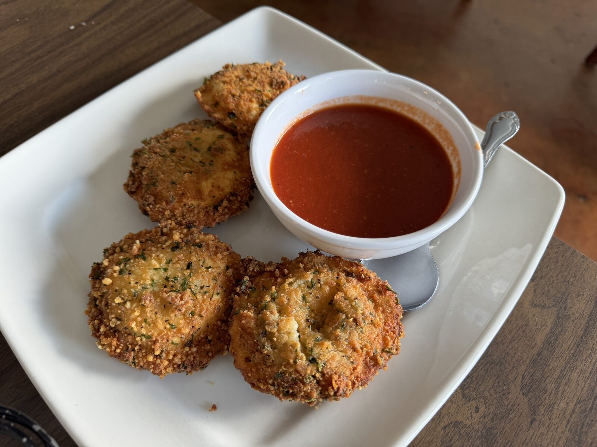

First things first · At the table
Toasted ravioli
In St. Louis, ravioli takes a crisp, golden turn. These little pockets of savory filling are breaded, toasted, and usually passed around with warm marinara. It’s a St. Louis specialty—and a very good reason to save room.
